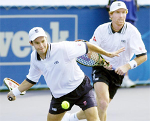

Previous: Confessions of a Tennis Disruptor | 🏠 Strategy Home | Next: Enhancing Your Training and Practice
Doubles Playing Styles
Comprehensive unified tennis knowledge base — Fundamentals, Stroke Analysis, Reference Library, and more
Doubles Playing Styles
Louis Cayer
Attacking and counterattacking patterns make doubles naturally exciting.
Singles play may attract the most media coverage at the professional level, but doubles is the heart of tennis at the club, recreational, and amateur levels. Doubles juxtaposes positioning, movement, and shot selection, creating tactical possibilities that are much more varied than those common in singles play.
The presence of players at the net when serving and returning reduces most of the rallying that occurs in singles. The attacking and counterattacking patterns and the variety of net play possibilities makes doubles naturally exciting to play or to watch.
Your tactics must be based on your style of play.
Most people think that there is only one way of playing doubles, and they implement tactics that do not necessarily fit their own styles of play, including their strengths, and weaknesses. In these articles you will learn a wide range of tactics and strategies and how to incorporate them into your own style, that of your partner, and more importantly, the style of your team.
The Three Elements
The three elements of successful doubles play for all teams are: court coverage, shot selection, and teamwork. Great doubles teams have the ability to cover the court effectively with proper positioning, movement, and poaching actions. They also execute shot selections appropriate to various playing situations when serving or receiving.
Success comes from court coverage, shot selection, teamwork.
In these articles, you will learn these principles of positioning and movement. You will also learn the different types of poaches (reaction, anticipation, command or signal, I formation, and Australian formation) that are necessary when serving or receiving. Everyone agrees poaching is important but very few players do it frequently or successfully.
But let's start by we will addressing an underlying issue in doubles tactical training. This is the issue of game styles. Once we understand the style of a particular team, we can see how to implement appropriate tactics based on the team's strengths and weaknesses as well as those of the opponents, as well as the specific match situations.
Very few players poach frequently and successfully. Good doubles' teams poach also on return of serve.
Playing Styles
Categorizing a team of two players who have differing personalities and playing styles can be difficult, because every player, and every team is unique in many ways. In general, however, we can break down the playing styles in doubles into 5 categories:
Quick Movers and Poachers
Hard Hitters
Precision Players
All Court Players
Combined Game Style Players
Let's talk a look at the general characteristics of each style, and outline some of the potential strengths and weaknesses.
Movers and Poachers create even more uncertainty by "faking" to cross which has the receiver hit down-the-line.
Quick Movers and Poachers
Quick moving and poaching teams tend to move a lot when serving and returning. Their constant movement creates uncertainty in their opponents. Most players view them as good doubles teams, since they implement poaching actions very well. Many doubles players would like to be able to play this game style but do not feel confident enough at the net.
The biggest potential strengths of the team are speed and movement. In their service games, this means the server can move in quickly and better handle the returns, as well as put away floaters. The server's partner's strength in this style is great presence at the net. This type of partner is agile enough to poach successfully on a regular basis, as well as deal with down the line returns and passes.
In the return game, the main strength of the team is their overall movement, and their ability to win exchanges between all four players at the net. Typically, the receiver has the ability to chip or drive and charge the net. This forces the server to attempt a better second shot--a better volley if coming in, or a better groundstroke if he is staying back.
Quick Movers have the ability to chip and charge the net.
The receiver's partner can move forward and poach very well. The creates pressure on the server's first volley. This is the best possible partner to have if you return well. Fast movers arid poachers are always ready to intercept a crosscourt shot in their role as either the server's or receiver's partner.
Sometimes Movers and Poachers can be overpowered by Hard Hitters, particularly teams who have big serves. If they can't return, then they can't put their strengths into play. Poaching too soon can expose this type of team to winners down the line. Often, they lack defensive skills and aren't effective when they need to play defense, especially with both players back. On serve they are vulnerable to powerful returns. In the return game, they can also be vulnerable to lobs.
Hard hitters try to overpower teams with big serves and big groundstrokes.
Hard Hitters
Hard-hitting teams typically seek to overpower their opponents. They rely on big first serves and/or power groundstrokes. Both partners are frequently at the baseline on the returns, with the server staying back to initiate the point with powerful groundstrokes. This tactic of staying back is sometimes less a preferred tactic than an indication of the server's lack of confidence in the serve and volley.
More and more teams now rely on powerful serves, returns, and ground- strokes to win their points. One of the main reasons is that juniors are brought up with powerful baseline games and often do not develop effective net games anymore. In 2003, there were less than 10 players on the tour in the top 100 (both men and women) who could be legitimately labeled serve and volleyers.
Their strength of the hard-hitting team is the ability to overpower opponents simply through the pace of their shots, either or serve, or off the ground, or both. Hard hitting teams with big groundstrokes are sometimes most effective on clay where they have more time to set up. Typically, the server's partner can protect the down the line since the team is less worried about placements and poaching. In return games, power off the ground usually translates into powerful returns, especially on second serves. If the team is dominant enough, playing two back can actually be an advantage.
These teams often lack shot variety and/or the ability to move well as a team. This can be a weakness if the opponent's return well. Hard hitters will often struggle on fast surfaces against good volleyers. If they return with western grips, typically they will stand further back on the returns. This gives the net player more time to poach. Because typically these teams do not move forward on the return, or try to poach the first volley, there is also less pressure on the server's first volley. If the hard-hitting team is playing two back the server can also volley to the middle of the court.
Hard hitters typically hit power returns from further back in the court.
Precision Players
Precision teams play with great touch and finesse. They move their opponents around with angles, dinks, drop shots, and lobs, trying to take advantage of any weakness. Only gifted Precision Players make it to the pro tour, since the hard hitters often overpower them and the poachers move so well that they throw them off balance.
This game style is much more common at the senior level, where many players tend to use primarily backhand slices instead of high-powered two-handed drives. Successful precision players have the ability to make their opponents look bad. They don't usually hit flashy shots, but they hit very accurately and this induces many mistakes in opponents. Precision players frequently produce angles that will pull one player off the court, leaving only one player to deal with the second shot. They are normally hard to read because they disguise their shots well.
Precision players have consistency, touch, and good hands.
The strength of Precision Players is consistency, especially on the first volley and the ability to win points with placement and touch. Typically, they have good hands which translates into good touch and good defense. They have the ability to keep opponent's guessing by mixing shots, with different speeds and angles as well as to dink and use the lob on returns and second shots.
One weakness of precision teams is that they rarely intimidate opponents. Sometimes there serves lack power and opponents generally feel they have the chance to break serve in every game. Opponents are less hesitant to poach against there returns. Precision player often aren't aggressive enough in moving forward. Serving teams in pro tennis are getting more powerful and agile every year, making it tough for this type of team to win in pro tennis, but precision players can be very successful at the club and senior tennis levels.
All court players can win points both at the net or at the baseline with a good variety of groundstrokes.
All-Court Players
All-court players make the best teams, since they can implement most of the tactics of the other types of teams. They can drive, place, and move well, both at the baseline and at the net. They can adapt to either the opponents or the surfaces. They can play defense, but transit to the offensive at any opportunity.
Unfortunately, so many players are forcing baseliners, it is rare to group two all-court players on the same team. It does happen, however, as in the case of the Woodies (Australians Mark Woodforde and Todd Woodbridge), both of whom were very solid all-around singles players. They became the most successful doubles team in the history of the game, amassing 60 doubles titles--11 of which were Grand Slam titles.

The Woodies were both solid all-court players--a rarity on a single team.
The main challenge for all-court players is specialists who can outplay them on specific surfaces. For example, the fast movers and poachers may overtake them on grass by specializing in volleying, and the hard hitters may challenge them on clay. Overall, however, they form a solid team on any surface.
All Court teams have more varied options for holding serve. Typically, they serve and volley effectively and have a strong presence at the net. They have great potential to break serve with solid returns and second shots. Typically, the net player can apply pressure at the net on his partner's returns.
They can be beaten in two ways, by teams that are powerful enough to hit through them from the baseline, or that can challenge them for dominance of the net. Sometimes their variety can work against them if they hesitate about which tactic to employ or use the wrong tactics in certain situations.
Combination Teams
A combined team pairs players with two different game styles. Doubles teams that are composed of players with different playing styles are quite common. We can identify three frequent combinations:
The hard hitter sets up his partner with solid cross-courts from the baseline.
Hard Hitter and Poacher
This combination works when the Hard Hitter gets a high percentage of first serves in which maximizes his partner's strengths at the net. If he stays back, he sets up the Poacher with solid cross-courts. On returns he needs to remember that he doesn't necessarily have to hit winners, since his partner can set up his partner to intercept the server's first volley or groundstroke. He must be able to move forward when necessary because the server will often volley short crosscourt to avoid his partner's poach. He has to respect that his partner doesn't have the same power, but can win points other ways with mobility and poaching.
The Poacher on the other hand has to realize that he has to be able to serve and volley without the benefit of his partner poaching. He may not be able to come in on returns as much since his partner may be more comfortable playing two back. He has to respect that his partner may be awkward at the net and not come in situations that seem obvious or natural to him, preferring to stay back and rely on his powerful drives.
When playing with a Poacher get a high percentage of first serves in play.
At the intermediate level in club tennis, we often encounter this combination of a hard hitter who remains at the baseline, hits powerful drives and covers the lob paired with a quick net player who plays close to the net, ready to poach or to put a volley away. The key for these teams is to develop an effective way of constructing points, while respecting what each player brings to the team.
Precision Player and Poacher
In this combination, it's even more important that the Precision Player get a high percentage of first serves in since he lacks the power of the Hard Hitter. He should also serve to locations that Poacher prefers--either the returner's weakness or the side where the Poacher believes he can more easily anticipate the return. The Precision Player should encourage his partner to continue to poach even if he misses a few easy balls. In the return game the Precision Player should set up his partner with low returns. He should let his partner know when he lobs or goes down the line.
The Poacher should take advantage of the Precision Players all around skills by encouraging him to poach as well. But the Poacher should also respect the fact the Precision Player may not be comfortable coming in behind serves and/or returns in the same way as the Poacher, and may be more comfortable using a groundstroke as a second shot.
Hard Hitter and Precision Player
In this combination, it's important the partners support each other when one or the other is struggling to hold serve, since neither player has the advantage of being a great poacher. The Hard Hitter has to respect the Precision Player if he misses lobs or gets poached on her serve. Conversely, the Precision Player must be patient if the Hard Hitter misses power returns.
Mutual respect--the challenge to accept your partner for the player she is.
In all these combinations, there are two major challenges. The first challenge is mutual respect--accepting a partner with different tactics, strengths, and weaknesses. The second challenge is to learn to set each other up in a way that takes advantage of the strengths of each partner.
Having different game styles is generally advantageous, since it is difficult for opponents to adjust to the dissimilar tactics of two players as they change from one position to another (server, server's partner, receiver, receiver's partner). Such diverse tactics require the opposing team to make constant adjustments from point to point.
All these different game styles can win tournaments if the players learn to work tactically as a team and support each other. Identify which type of player you are and decide which tactical patterns best suit you. Identify your current partner's game style. Instead of focusing on what he does not do as well as you, discover his strengths and how the two of you can work together to maximize the team performance.
Louis Cayer is one of the world's best known experts on the art of doubles, and has worked with players who have reached the top of the game, including Grant Connell, Sebastian Lareau and Daniel Nestor. He is the Head National coach for Tennis Canada, and the former Canadian Davis Cup captain and Olympic Coach. Louis is the author of the highly regarded book written for the International Tennis Federation, Doubles Tennis Tactics, and the companion DVD/video, published by Human Kinetics. Click Here to order.
Source: tennisplayer.net archive — Doubles Playing Styles.docx (John Yandell teaching library, 2002-2022). Extracted and rendered as HTML for Tennis Future Lab.